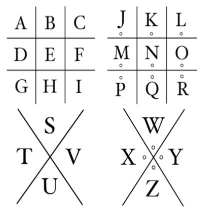

If you have any technical issues or questions, contact me directly.
WhatsApp: 664 252 723

Exactly! You chose Option II.
The chest opens. Use the key from the image above to decipher the message:
What is the destination you have discovered?